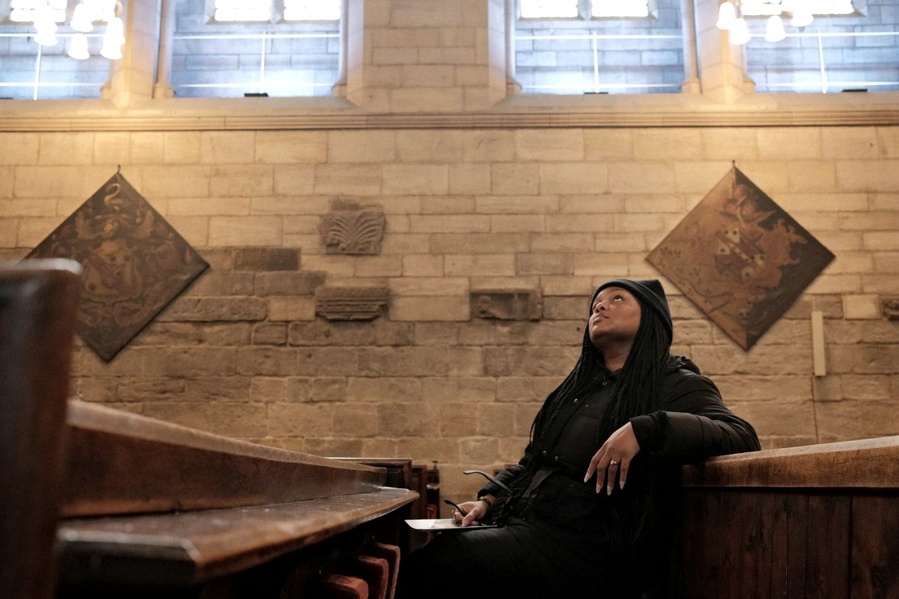
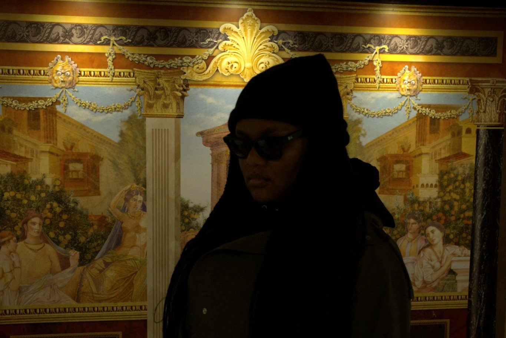
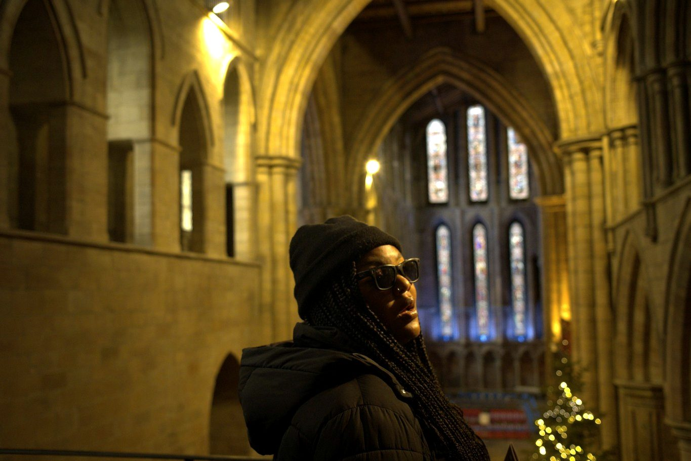
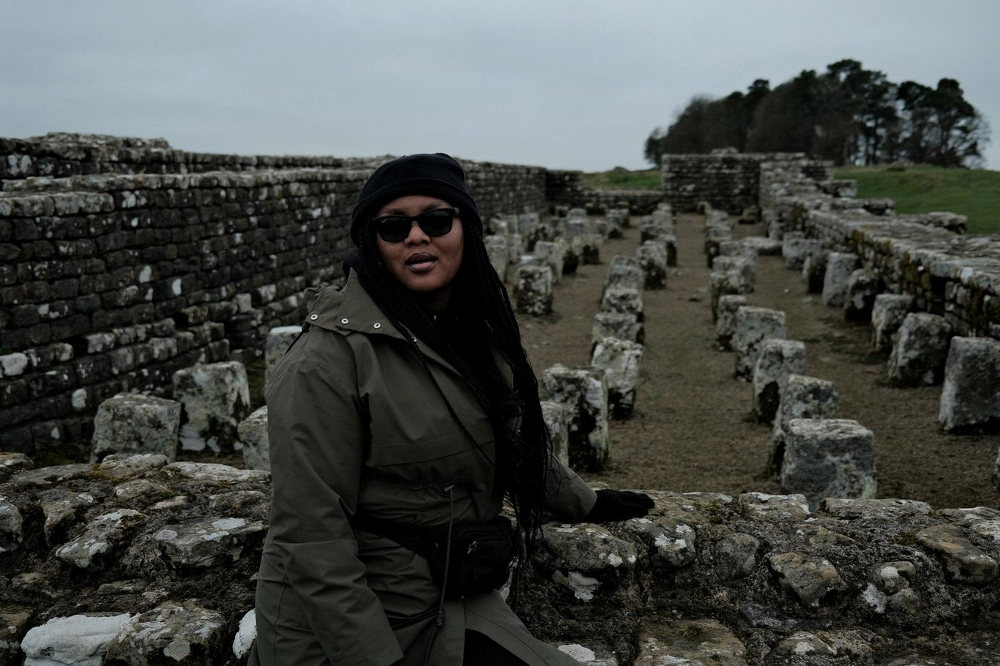

Services
Research, consultancy and interpretation
Eight ways of working with museums, publishers, documentary producers, creative teams and cultural organisations — from a single source pack to a project-long research partnership.
Historical & Archival Research
Original research using primary and secondary sources, archives, databases and specialist scholarship.
- Archive and special collections visits
- Database and catalogue searches
- Literature and historiography reviews
- Source appraisal and referencing

Manuscript & Primary Source Research
Working with historical documents and manuscripts, including Latin sources, palaeography and codicological analysis.
Historical Consultancy & Accuracy
Research, fact-checking and contextual advice for film, television, publishing, games, podcasts and other creative projects.
- Script and manuscript fact-checking
- Period and setting context notes
- Sensitivity to evidence and interpretation
- Notes on sources and further reading

Object, Artwork & Provenance Research
Researching objects, artworks, collections, ownership histories, makers and their wider historical context.
Museum & Exhibition Research
Collections research, exhibition development, interpretation, object narratives and supporting historical content.
- Collections and object research
- Exhibition development support
- Interpretation and object narratives
- Gallery and label text

Historical Writing & Interpretation
Transforming complex research into engaging scripts, articles, exhibition text, educational resources and public-facing content.
Research Briefs & Source Packs
Tailored timelines, bibliographies, source packs, background reports and research dossiers for teams that need information quickly.
- Timelines and chronologies
- Annotated bibliographies
- Curated source packs
- Background briefing reports

Lectures, Talks & Workshops
Historical talks, educational sessions, public programmes and contributions to podcasts, panels and events.

Taking the methods, evidence and critical thinking of scholarship, and using them to communicate the past clearly, accurately and engagingly.
Enquiries
Not sure which one you need?
Most projects draw on more than one of these. Describe what you're working on and I'll suggest the shape the work should take.